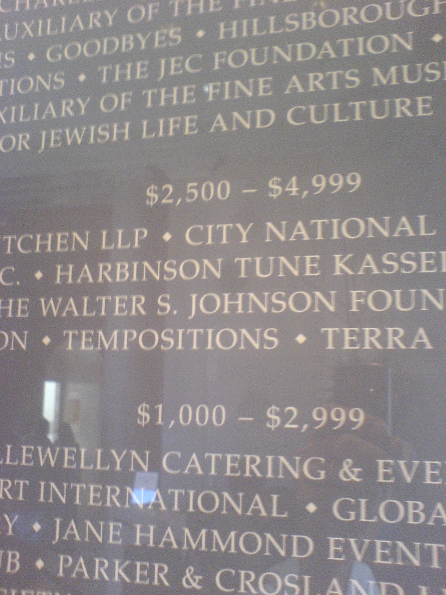
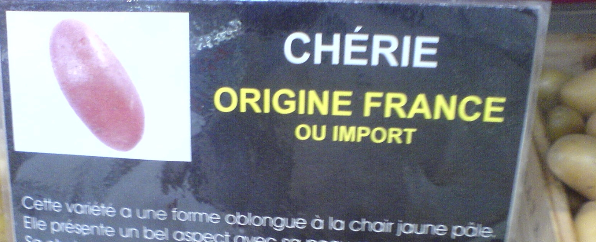

There are many constraints on the quality of information. Respect of hard mathematical facts, and of logic, is one of them.
Logic is about values. Not respecting logic is not respecting your reader. Toying with logic is toying with your audience. Sometimes you can try rhetorical tricks, violate logic for the sake of attracting attention. But these can only be isolated exceptions, distractions.
Sometimes you just make mistakes – and create some confusion. The Donors at the San Francisco Legion of Honor are divided in categories, according to the amount of their donation. But then, these categories cannot overlap.
 Image Credit: RCWhere did your name end up? If you donated $2,800, were you promoted to the $2,500-$4,999 category, or demoted to the $1,000-$2,999 category? Are you very good, or just about good? And how can the reader know? Nice, solid capital letters. Great visual impact. Everything in this image bespeaks power, generosity, and reassuringly so. But the overlap of categories spreads the doubt, and dramatically lowers the epistemic value of your information.
But this, as we said, is likely to be a mistake. What if you deliberately toy with logic, and with the logical expectations of your audience? French law requires labeling of the country of origin of food on sale. Here is how a retailer managed it:
 Image Credit: RCRead it carefully: “Origin: France, or imported.”The point is, no one is lying here: the label could not be more true. Potatoes: they do come from France, or elsewhere. “Elsewhere” means “not France”. “P or not P” is a tautology, a sentence that is true in all possible worlds. In no situation potatoes will not come from France, or not France; they are bound to come from somewhere (maybe from Mars, or from Sirius: the sentence will be true nevertheless).
Logic is about value. Tautologies, in this communicational context, are too cheap. That they have been used suggests laziness, or worse.